🎉活动与演出

「湾区5/22-5/25长周末活动| 嘉年华+夜市+市集+博物馆」
正好对上这个长周末！嘉年华、夜市、免费艺术展都有，多元文化体验，家庭出游也合适。

「🍎本周长周末湾区精彩活动5/21-5/25」
时效性满分的长周末活动清单，懒人直接照抄就行。

「5月的湾区太好逛了🔥码住这篇！」
BottleRock Napa音乐节、唐人街夜市、半月湾爵士节全在5月，错过等明年。
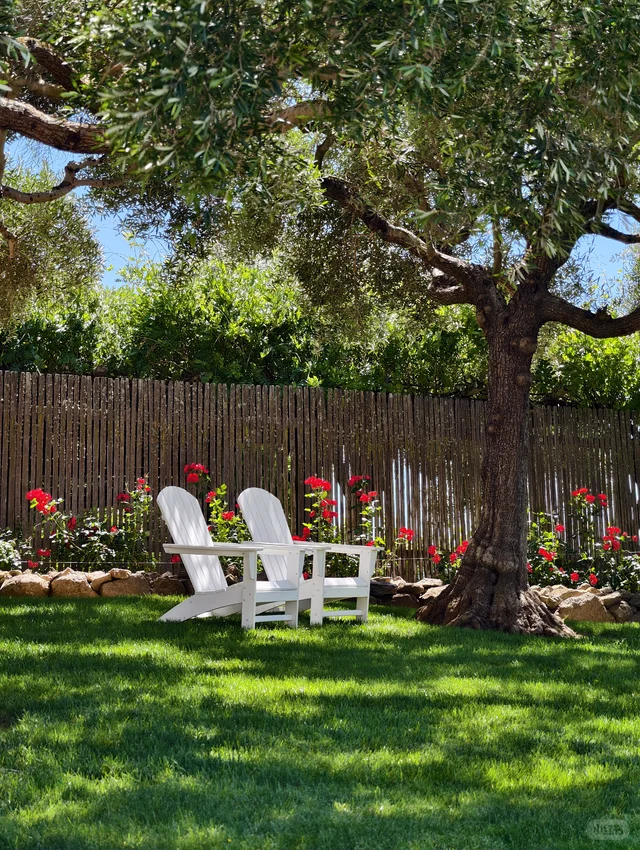
「湾区限定 | Mulberry U Pick」
桑葚和樱桃自摘季到了，周末带家人朋友体验农场乐趣超治愈。
「圆梦🌃北加天灯节」
在北加州亲手放飞天灯，浪漫指数拉满，仪式感很强。
🎨艺术与文化
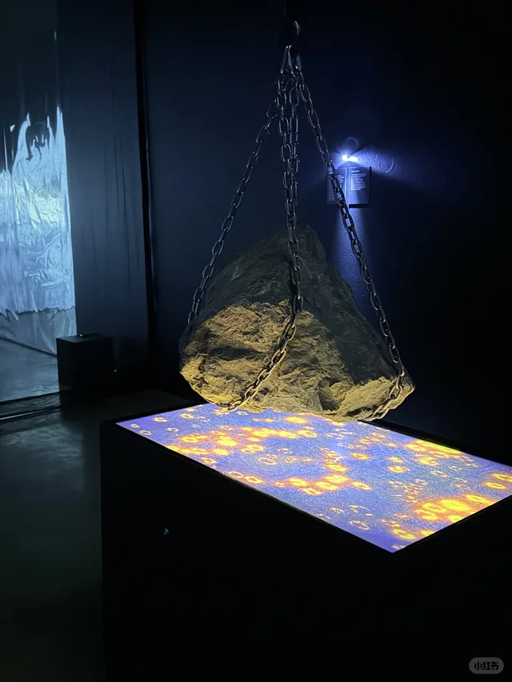
「不可错过的好展，坐标旧金山湾区」
本地博主亲自盖章的好展，看展爱好者别错过。
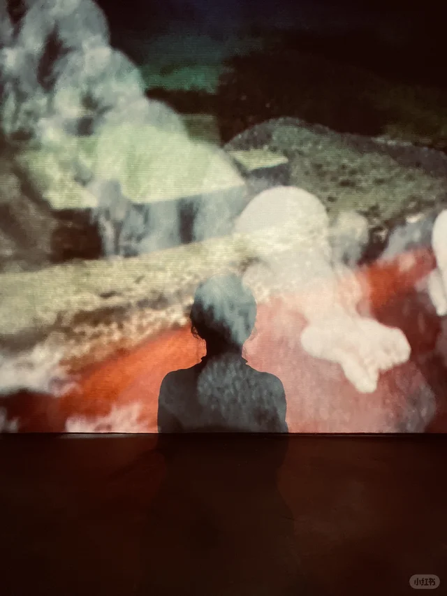
「塩田千春｜SF 🔴」
盐田千春的红线装置艺术终于来湾区了，沉浸式视觉震撼。

「Beeple新展在湾区Palo Alto开幕🌊」
数字艺术大佬Beeple的新展登陆Palo Alto，科技与艺术的碰撞值得一看。
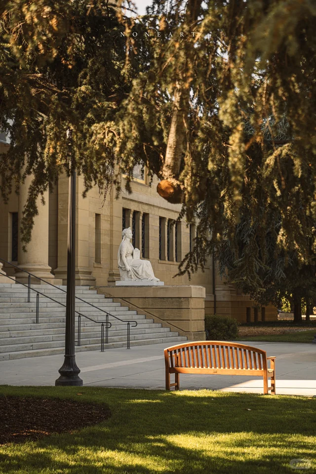
「湾区宝藏免费艺术馆｜斯坦福cantor艺术馆」
斯坦福校园里的免费艺术馆，文艺青年的低调宝藏地。
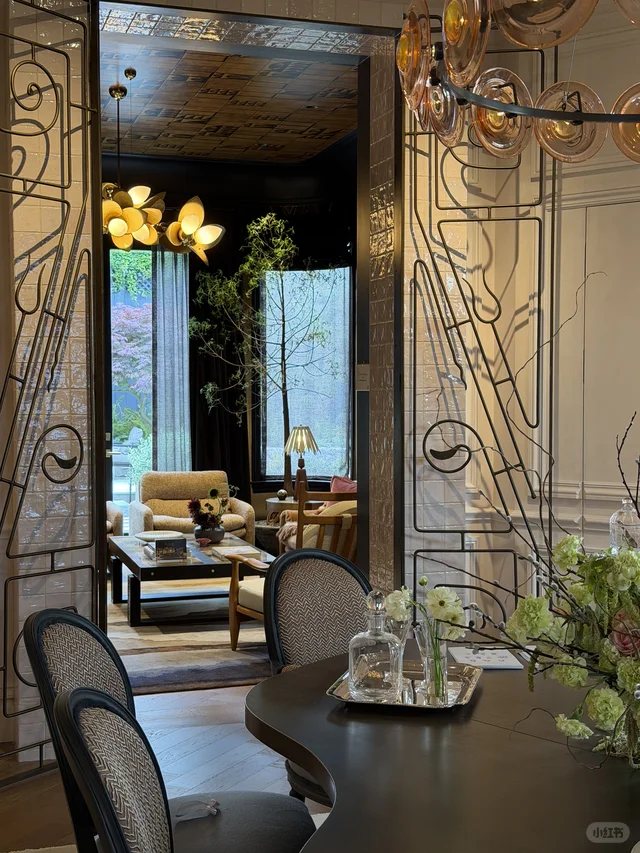
「SF Showcase｜家居人每年最期待的展开幕了」
一年一度的旧金山Decorator Showcase又开了，家居美学控必冲。
🍜美食探店

「湾区｜开车一小时也要去吃的贵州烧椒鸡！好吃」
开一小时车都要去的贵州烧椒鸡，重口味爱好者收藏起来。
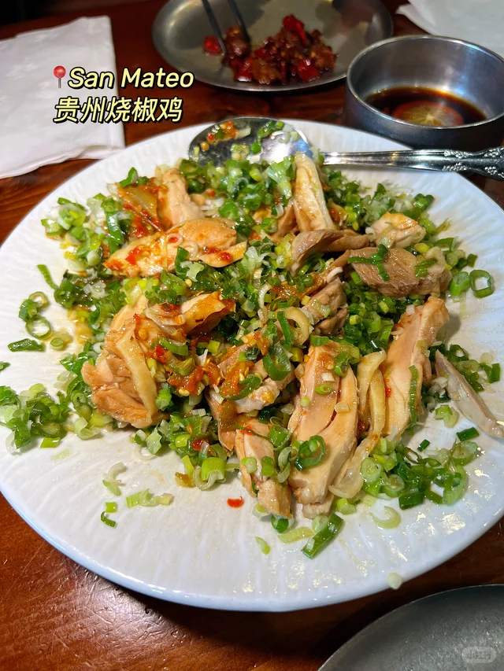
「七访｜湾区最适合孕期解馋的米其林三星」
七次回访的米其林三星，孕妈也能放心吃，可见品质有多稳。
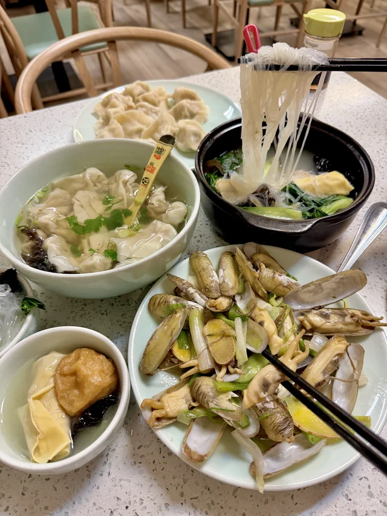
「湾区美食｜比招牌鸭肉更好吃的是炸羊舌」
招牌鸭肉之外的隐藏王者——炸羊舌，资深食客的私藏推荐。
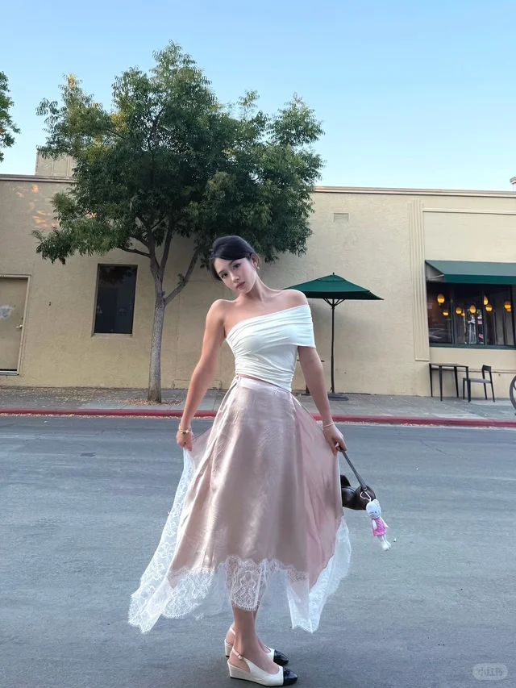
「终于吃到SF Chronicle强推的越南小馆」
被SF Chronicle强推的越南小馆，本地报纸盖章的实力派。
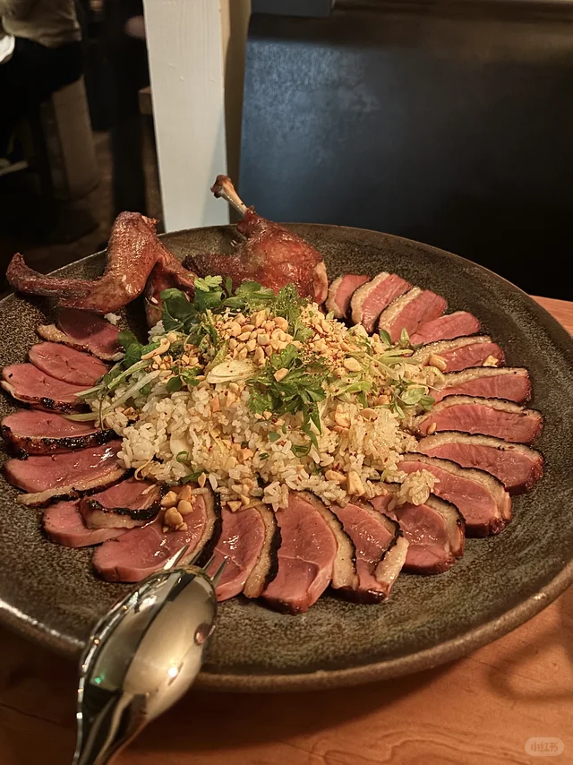
「旧金山湾区的宝藏南意小馆」
藏在湾区的南意小馆，想念地中海风味的可以冲。
🌿户外自然
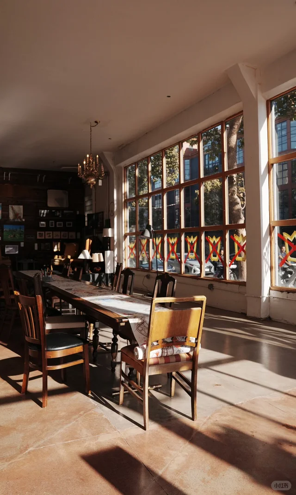
「SF湾区走过最棒的trail！走完爱上了SF！」
博主走完直接爱上SF的trail，长周末徒步绝佳选择。
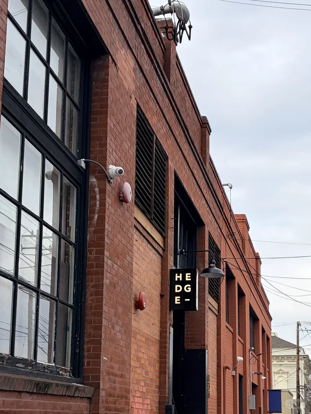
「湾区桃花源记——Djerassi艺术徒步」
在山林里走着走着遇见艺术装置，徒步+看展二合一的独特体验。

「🇺🇸旧金山｜这是我去过最美公园之一」
博主心中SF最美公园之一，春天去拍照氛围感爆棚。

「🌑在湾区发现了超好拍风光的石头」
湾区的小众出片地，怪石嶙峋的风光适合摄影爱好者。
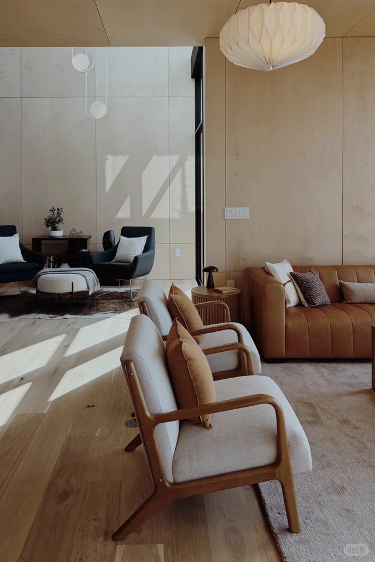
「湾区周边冷门Getaway 8个Day Trip打卡地」
8个冷门Day Trip地点合集，长周末逃离人潮的最佳选择。
💎宝藏地点
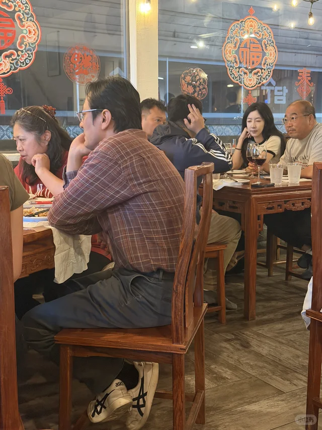
「湾区茶室，适合找个雨后点一壶茶，读一本书」
雨后泡茶读书的茶室，文艺青年的精神角落。

「旧金山必访｜The Interval at Long Now」
Long Now基金会的酒吧+图书馆，旧金山独此一家的极客文化地标。
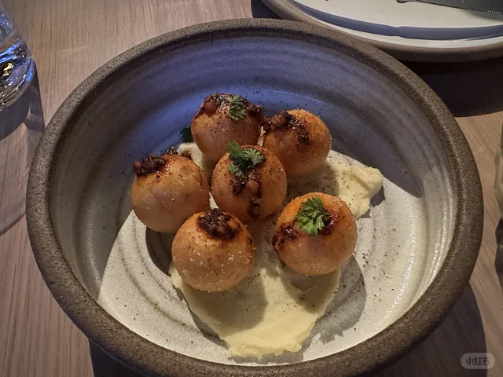
「三番周末逛街 🌟 Fillmore Street真宝藏呀！」
Fillmore Street的小店真的好逛，长周末闲晃首选街区。
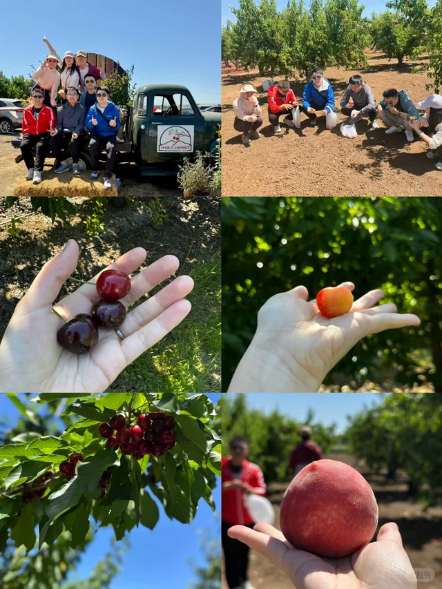
「湾区目前最喜欢的周末活动 🚂」
博主目前最爱的周末打卡地，神秘感拉满想点开看看。
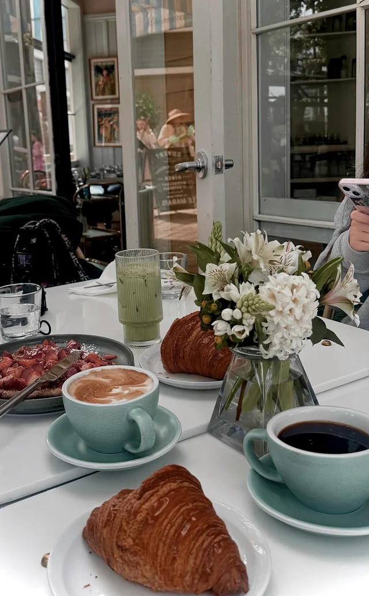
「🇺🇸湾区｜和郑氏姐妹打卡Larkspur🌿✨」
Larkspur小镇慢生活打卡，北湾的小清新好去处。